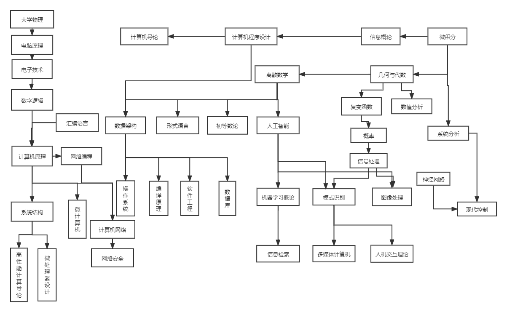

计算机学科各课程之间的关系图

计算机学科各课程有用的参考资料
课程资料
我对计算机专业的认识
首先听到计算机这个专业我可能想到的是它在社会中良好以及广泛的就业，而且计算机的应用领域广，有如人工智能，软件开发，信息管理等等。计算机专业有很多个学习方向，有硬件的，也有软件的。针对现阶段，硬件方面的发展几乎到达了巅峰，侧重软件方面的发展比较有前途但不容易学，特别是编写软件。软件方面的发展包括软件的应用和开发，软件的应用是基础，软件的开发要靠专门的技术和依靠相关的开发工具然后计算机专业是一个变化非常迅速的专业，大部分做这个专业的人都是吃的年轻饭。计算机专业也要求掌握很多的语言，算法等知识，涉及面很广，并且计算机专业注重实践，需要大量的实战经验。
我的学业规划
自我分析：平时是一个比较悠闲的人，兴趣广泛，有小提琴的特长，在乐团演奏，喜爱打羽毛球等。做事脚踏实地，但有时缺乏长期坚持的动力。 对于大学本科学业生涯： 大一,继续学好基础课，保证较好的成绩。多对即将要分流的专业进行了解和规划。 大二,进行向专业课过度的准备，并大致对自己专业及日后学习进行深入的了解，课余也可以学习以下其他专业的课程。按照能力参加一些竞赛。 大三及大四,加深专业课程的学习，为接下来读研究生做准备，并且大致选择自己将来学习专业的方向